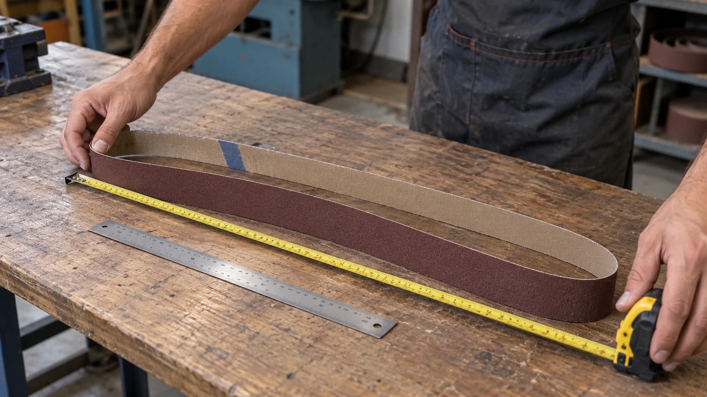

Para comprar a reposição de uma cinta de lixa, você precisa identificar duas medidas: largura e comprimento total. Confundir o comprimento da cinta inteira com a medida dela dobrada é um erro que pode resultar na compra de um produto incompatível.
Comece pela identificação da máquina
Antes de medir, consulte o manual ou a especificação da lixadeira. A medida nominal indicada pelo fabricante é a principal referência.
Também procure informações impressas no verso da cinta antiga. Uma foto dessas marcações pode ajudar a identificar dimensões, granulação e modelo do material abrasivo.
Faça qualquer conferência com a máquina desligada e desconectada da alimentação.
Como medir a largura
Retire a cinta e coloque uma régua atravessada sobre ela, de uma borda à outra. A medição deve ser perpendicular ao comprimento.
Confira em mais de um ponto se as bordas estiverem desgastadas. Uma cinta que perdeu material nas laterais pode apresentar uma largura menor que a original.
Como medir o comprimento total
Se a cinta estiver inteira, uma forma prática é medir uma volta completa:
- Faça uma pequena marca na borda da cinta.
- Apoie esse ponto sobre uma marca de referência em uma superfície limpa.
- Role a cinta cuidadosamente, sem deixá-la deslizar, acompanhando todo o seu contorno.
- Pare quando a marca da cinta voltar a tocar a superfície, completando uma volta.
- Meça a distância entre o início e o fim do percurso.
Outra possibilidade é acompanhar todo o contorno com uma fita métrica flexível, sem esticar o costado. Repita a medição para conferir.
Cuidado com a cinta dobrada
Uma cinta com aproximadamente um metro de uma extremidade à outra, quando dobrada, pode ter perto de dois metros de comprimento total. Porém, as curvas das pontas e a forma de acomodar o material interferem nessa estimativa.
Para encomendar uma medida, prefira conferir a volta completa.
Se a cinta já estiver rompida, ela pode ser estendida para medição, desde que não existam partes faltando ou sobrepostas.
Como informar a medida ao fornecedor
Escreva os nomes das dimensões para evitar inversões. Por exemplo:
“Preciso de uma cinta com 50 mm de largura e 2.000 mm de comprimento total.”
Fale com a Robusta
Uma cinta antiga deformada pode servir apenas como referência aproximada. Se houver dúvida, envie à Robusta a medida encontrada, fotos da cinta e a identificação da lixadeira antes de confirmar o pedido.
Conversar pelo WhatsApp